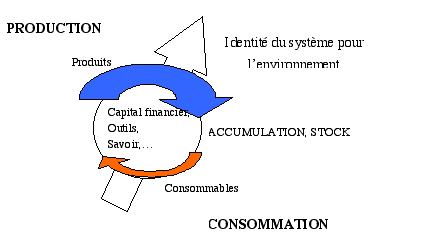
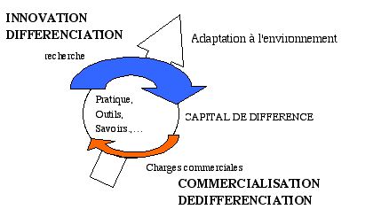
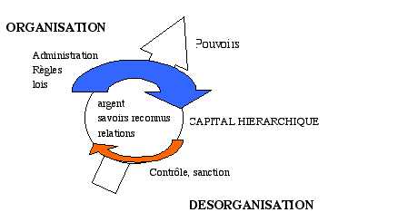
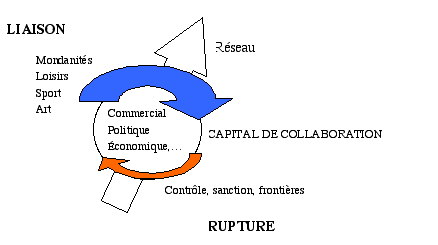

LE DEVELOPPEMENT COMPLEXE
Partie 2: Approche statique
Le bilan comptabilise les capitaux qui sont immobilisés dans le système. Nous distinguons :
Le capital interne qui correspond à une capacité interne à produire.
Le capital externe est la position du système dans l'environnement, c'est-à-dire dans l'ensemble des systèmes qui l'englobent. Il correspond au capital interne du système d'ordre supérieur.
La distinction entre capital interne et externe ne dépend que du référentiel dans lequel l'observateur se place. Cette distinction est intéressante lorsque l'on analyse un système spécifiquedistinguer les c, car on peut distinguer les contraintes internes et les contraintes externes qui vont produire des stratégies et des dynamiques différentes.
D'une manière très générale, le capital peut être définit de la manière suivante :
|
Le capital
|
||
|
physique
|
biologique
|
social
|
|
est la capacité à reproduire, à
différencier, à organiser et à assembler
|
||
|
des formes en deux dimensions
|
des formes en trois dimensions (3D)
|
des symboles (4D)
|
|
porté par
|
||
|
des particules.
|
des particules et
|
des particules,
|
|
des structures physiques.
|
des structures physiques et
|
|
|
des systèmes biologiques.
|
||
La diversité et la complexité des capitaux, nous obligent à donner une définition qui les catégorise. Le capital est " quelque chose " que possède du potentiel. Le potentiel s'exprime par rapport à l'objectif d'un système, par rapport à son identité extérieure. Cette identité extérieure assure au système des flux hiérarchique indispensables à sa survie et à son développement. Ainsi, un même objet pourra constituer un capital différent en fonction du système dans lequel il se trouve. Le capital est donc lié à un critère de mesure.
Le critère que nous avons choisi est la capacité à produire des flux de type R, D, H, ou L, eux-mêmes à l'origine de la complexité. Le capital est constitué d'information. Ces informations sont contenues dans la structure du système. Le capital est ainsi fixé sur un support qui cumule l'information des niveaux inférieurs. L'information contenue dans les symboles constitue le capital du niveau social. Ces symboles sont marqués dans les trois dimensions qui sous-tendent le niveau social et dans le niveau social lui-même. Les informations contenues dans les formes (ADN, morphologie,...) structurent le niveau physique et construisent les capitaux du niveau biologique. Enfin, l'information contenue dans les interactions linéaires liant les particules entre elles, constituent le niveau physique.
Dans le système social, le support des symboles peut être une structure à une dimension, des bits par exemple, à deux dimensions et ainsi porter des représentations graphiques symboliques (écriture, peinture, photos, etc.) et à trois dimensions lorsque les objets possèdent un contenu symbolique. Les rites et le langage (sons), qui sont décrits dans quatre dimensions, portent également des informations symboliques.
Plusieurs définitions peuvent données du capital social.Le capital externe peut être définit de la manière suivante:
| Le capital social est constitué par: |
Reproduction Identité |
Différenciation Spécialisation |
Hiérarchie Organisation |
Liaison Réseaux |
|
Les individus et les systèmes sociaux: Capacités symboliques |
Valeurs des autres systèmes que l'on peut infléchir vers ses propres objectifs |
Valeurs des autres systèmes
que l'on peut obtenir par échange, pour ses propres objectifs
|
Valeurs des autres systèmes
que l'ondispose pour ses propres objectifs.
|
Valeurs des autres systèmes
que l'on peut mobiliser et partager pour atteindre ses propres objectifs.
|
|
Les organismes vivants et les biotopes Capacités fonctionnelles |
||||
|
L'énergie et la matière Capacités physiques |
||||
| Pour la finalité suivante: |
Continuité
|
Adaptation
|
Domination
|
Collaboration
|
Le capital d'identité (capital culturel) permet de réaliser des économies d'échelle. En effet, dans la dynamique de la production, plus on produit des biens et des services, moins leur prix de revient est élevé. Par ailleurs, en raison de la hiérarchie de masse, plus le marché est important plus le bénéfice potentiel est grand et plus l'entreprise possède un capital externe important. Plus il y a d'individus dans un système ayant une identité commune plus la hiérarchie du groupe est élevée. Plus il y a d'adhérents politiques, plus le groupe a de pouvoir pour faire évoluer la situation en sa faveur. Plus une connaissance est vulgarisée, plus facile en sera son utilisation. Plus une éthique est généralisée, moins les conflits seront importants. La croissance du capital identitaire est limitée par la compétition qu'elle entretien avec le capital de spécialisation. Lorsqu'une identité est trop généralement dispersée et qu'elle n'est plus en opposition avec d'autres identités, pour en maintenir sa cohésion, la spécialisation émerge en son sein et divise l'identité pour augmenter le capital de spécialisation au détriment du capital d'identité. La performance systémique est à la fois dans une forte identité, (objectifs communs) et dans une forte spécialisation. Le capital identitaire est composé d'un capital interne complexe, productif et d'un capital externe de consommation. Le capital productif est la capacité interne à produire l'identité du système, identité qui constituera les flux extérieurs et permettra un rapport hiérarchique avec l'environnement. Le capital externe de consommation est la capacité du système à acquérir les ressources de l'environnement destiné à assurer la production de son identité. Bien que ce capital engendre des flux de type entropique, il n'en est pas moins importants pour assurer le maintien et la croissance de sa complexité.

Le capital de différence (capital dit "économique") permet de réaliser des économies de complémentarité, car il concentre les productions dans des environnements plus favorables, plus spécialisés à l'émergence des identité (biens, services, symboles,�). Inversement, il permet d'occuper des espaces socio bio physiques spécifiques avec plus de performance. Une plus grande performance productive, des co�ts entropiques moindres (moins de consommation) sont à l'origine de la hiérarchie qu'engendre la spécialisation. Ces moindres co�ts résultent d'une économie de souplesse et d'adaptabilité et donc d'une augmentation de la dépendance (obligation d'échanger et de dépendre du besoin des autres), corollaire de la spécialisation. Cette adaptabilité se délocalise à un niveau systémique supérieur. La spécialité peut être un objet, un outil, un consommable, mais aussi une connaissance, une relation, une éthique, une pratique, un rite. Les mêmes éléments constituant le capital d'identité peuvent constituer le capital de différence. Le capital de spécialité est constitué d'un capital commercial (entropique) et d'un capital innovant (complexe). Le capital commercial est un capital externe. qui consiste en la capacité de pouvoir diffuser le produits ou le service dans son environnement (réseau commercial, marché demandeur,�). Le capital innovant est un capital interne qui définit la capacité à produire de la différence par rapport à son environnement et à l'intérieur de son système. Comme pour l'identité, le capital de spécialisation ne peut produire de la hiérarchie sur son environnement (hiérarchie de complémentarité) qu'à travers une dynamique interne puis une dynamique externe des flux. La spécialisation couplée à l'échange produit une économie de complémentarité. Cette stratégie d'économie, interne et externe au système, trouve sa limite lorsque les co�ts cumulés de la spécialisation et de commercialisation sont trop importants par rapport aux économies réalisées. Lorsque l'on évolue vers cette limite ou qu'on la dépasse, il y a soit un mouvement de dédifférenciation des systèmes qui cherchent à retrouver de la polyvalence (évolution dans le sens d'une augmentation d'entropie), soit une augmentation de l'organisation (restructuration,...) qui permet de valoriser rationnellement la spécialisation en diversifiant les niveaux hiérarchiques et en redéfinissant, pour chacun d'eux, des degrés de liberté et de contraintes.

Le capital hiérarchique (dit capital "organisationnel") permet de réaliser des économies organisationnelles. La spécialisation est une " hiérarchie horizontale ", alors que l'organisation hiérarchique ou la " hiérarchie verticale " est une " différenciation verticale ". Chaque niveau prend des décisions en rapport avec la vision qu'il a de son niveau. Plus on est haut, plus on voit loin et plus les décisions ont une portée temporelle et spatiale importante. Ainsi, les économies liées à l'organisation le sont pour les mêmes raisons que les économies liées à la spécialisation mais dans une logique verticale. Les niveaux supérieurs cherchent à produire un cadre favorable pour les niveaux inférieurs, de sorte que les niveaux inférieurs peuvent concentrer leur énergie a leur tache sans se préoccuper de contraintes d'ordre supérieur. On peut penser que l'efficacité lié à la spécialisation verticale est un facteur de performance. L'organisation d'un système va de pair avec le controle de cette organisation, l'élimination ou la correction de ce qui est déviant par rapport aux normes fixées. C'est précisément le coût de cette organisation qui correspond à une désorganisation élémentaire. L'organisation du tout ne va pas sans la désorganisation partielle de ses éléments (augmentation d'entropie). L'optimisation des processus d'organisation consiste à maximiser l'organisation du tout, tout en minimisant la désorganisation des éléments. Pour qu'un capital organisationnel produise de la hiérarchie, responsable du bénéfice, les sous-systèmes qu'il organise doivent fonctionner. Les économies organisationnelles permettent aux systèmes organisés d'avoir un état hiérarchique supérieure par la hiérarchie organisationnelle. Le capital hiérarchique est composé du capital organisationnel interne et complexe, ainsi que du capital externe de désorganisation. Le capital interne d'organisation est la capacité du système à se spécialiser verticalement. Le capital entropique externe de désorganisation est la capacité de l'environnement à être désorganisé, à assumer une désorganisation. Les charges entropiques des systèmes sont externalisées. Plus l'environnement est capable d'assumer ces coûts, plus le système peut produire de l'organisation interne, car les deux mouvements sont interdépendants. Les limites de l'organisation apparaissent soit lorsque la désorganisation est trop importante pour l'environnement soit lorsque les co�ts de cette organisation sont trop importants en relation avec les économies qu'elle permet de réaliser. Trop d'ordre empêche le désordre, source de toute inspiration innovante. Une hiérarchie trop importante, des pouvoirs trop étendus, une désorganisation trop forte conduisent à une dynamique liante (syndicat, révolution,�). Chaque niveau hiérarchique à ainsi tendance à se lier, c'est-à-dire à se structurer en sous-système afin de mieux faire résistance à la contrainte.

Le capital liant (capital dit "social") permet de réaliser des économies de partage. Les systèmes qui se lient et qui collaborent en raison d'intérêts communs, sans toutefois que les objectifs soient en tout points identiques, réalisent des économies car ils mettent en communs leurs capitaux sans qu'une relation économique d'échange n'intervienne. Ils peuvent ainsi mieux amortir l'objet du partage. La dépendance liée au lien permet de partager des risques qui individuellement ne seraient pas assurables. Le partage est basé sur la confiance entre partenaires de même niveau hiérarchique, à la différence de la relation économique. Les interactions liantes permettent de créer des réseaux dans lesquels des biens circulent sans comptabilité formelle. Le mécanisme des interactions liantes est bien décrit par Marcel Mauss, à travers la notion de don et de contre don. Les économiques de partage permettent l'émergence d'une hiérarchie, la hiérarchie du lien. Le capital de confiance, est composé du capital interne complexe de lien, et du capital externe de rupture. Le capital de lien permet de construire la complexité interne du système. La délimitation de frontière avec l'environnement du système permet de produire du lien interne et de la rupture externe. Plus l'environnement à la capacité d'assumer une rupture avec le système, c'est-à-dire une exclusion du système, plus le système est capable de produire du lien interne. Plus des individus intégrés dans un système fortement liés peuvent assumer une marginalisation de leur environnement, plus ils pourront se lier au sein du système. La limite extrême étant la rupture totale d'un environnement diversifié avec une vie confinée dans un unique système, comme c'est le cas dans des sectes très fermées. Le co�t du lien est externalisé, le bénéfice est internalisé. Une limite apparaît cependant à la production de liens trop forts. Lorsque les éléments perdent des degrés de liberté, lorsque le contr�le des frontières qui délimitent le système avec son environnement et qui correspond au co�t externe de rupture est trop co�teux, ou lorsque le co�t interne de lien est trop élevé, le système évolue vers un nouveau bassin d'attraction. Soit il y a rupture du lien et évolution vers des relations hiérarchiques fortes, soit le système évolue dans le sens de la complexité en créant une identité commune et en fusionnant leurs objectifs et leur système de valeur. Cette double logique de la dynamique de ces flux (externalisation des co�ts et internalisation de la complexité) explique à la fois l'évolution interne du système vers la complexité par une réaction enchaîne, chaque p�le induisant le p�le suivant dans le sens dans aiguilles de la montre, et une évolution externe entropique par une induction d'un p�le sur l'autre dans le sens inverse des aiguilles d'un montre.

Le capital peut être actuel ou potentiel. Le capital actuel est le capital qui produit de la hiérarchie dans l'instant présent, alors que le capital potentiel à la capacité de produire de la hiérarchie dans le future. La mesure du capital actuel est évidemment plus facile, car elle est en relation directe avec la hiérarchie des systèmes. Le capital potentiel produira la hiérarchie de demain et c'est donc un enjeu stratégique que d'essayer de le déterminer. Déterminer le capital potentiel c'est anticiper l'évolution. Elle peut se réaliser par des outils intellectuels et rationnels de prospection sociale ou par une approche intuitive (niveau psychologique).
La dynamique complexe décrite dans le chapitre suivant, nous permet de comprendre l'évolution passée, de prévoir, dans la limite de la chaocité, l'évolution future, et surtout de proposer des stratégies et rationnelles pour le développement des systèmes à long terme. Le facteur limitant pour un développement durable et complexe n'est cependant pas la capacité à modéliser l'évolution des systèmes, ni à produire une connaissance rationnelle et globale de leurs dynamiques, mais le facteur limitant réside dans les rapports de pouvoirs et les intérêts en jeux qui guident l'évolution des systèmes. La raison, en tant que capacité intellectuelle des humains, n'est ici qu'un outil identitaire (tout le monde en possède) pour faire accepter passivement aux hommes l'ordre, parfois le désordre des choses, la hiérarchie et les contraintes qu'elles entraînent. D'une manière générale, les systèmes ou individus dominants possèdent une identité plus importante (la raison du plus fort est la meilleure), puisque c'est eux qui la définissent par le moyen de la redistribution sociales (flux éducatifs). Les dominants possèdent la connaissance, l'identité de la raison. Ils manipulent l'information et organisent des explications et des justifications rationnels autours des dynamiques qui leur sont favorables. L'impasse est donc de taille dans la mesure ou les systèmes sociaux s'éloignent dangereusement de leurs bassins d'attraction�.
Pour réaliser un bilan du capital actuel, on peut s'appuyer sur les flux que le système ou l'individu entretien avec son environnement. En effet, le capital étant à l'origine des flux, plus ceux-ci sont importants, plus le capital qui le sous-tend est important. Fort de ce résultat, il est possible d'apprécier qualitativement ses composantes en s'appuyant sur une définition certes juste des capitaux, mais inutilisable en tant qu'outil quantitatif de mesure.
| Capital identitaire | Somme pour un système du (nombre d'éléments identiques X % d'identité) |
| Capital de différence | Somme pour un système du (nombre d'éléments différents X % de différence) |
| Capital d'organisation | Somme pour un système du (nombre d'éléments contrôlés X % du contrôle) |
| Capital de lien | Somme pour un système du (nombre d'éléments liés X % de lien) |
Pratiquement, un homme politique aura une identité forte si de nombreux individus se réclame de ses idées, en faisant référence à sa propre personne, et non pas à une identité vague et générale. Ce capital se traduit en hiérarchie dans la mesure o� il pourra mobiliser des ressources pour lui-même mais aussi et surtout dans ce cas pour les systèmes dans lesquels il est intégré (état, conseil d'administration d'entreprises, association,�). Son capital dépasse donc sa capacité à produire des flux pour lui-même. L'homme politique dont nous parlons a un fort pourcentage d'identité car il est hiérarchiquement le plus élevé dans cette identité qui lui correspond à 100 %. Un adhérent à ses idées, inconnus du public aura une identité plus faible car le nombre d'éléments identiques à lui-même, faisant référence à lui-même est beaucoup plus faible, étant plus bas dans cette hiérarchie identitaire.
Il paraît évidemment difficile d'effectuer ce type de calculs pour un système complexe, car les identités, les différences, les hiérarchies et les liens sont qualitativement multiples. La grille décrivant les capitaux peut être utilisé pour catégoriser les mesures. Cependant, pour déterminer le capital, il faut déterminer l'importance des critères d'analyses en les centrant sur les objectifs des multiples systèmes qui englobent le système étudié.
Alors qu'il parait difficile de procéder au calcul des capitaux pour des systèmes qui composent de nombreux systèmes de valeurs (en faisant la somme pour chaque système de valeur séparément), l'exemple ci-dessus nous montre que ce type d'analyse est plus facilement réalisable pour un seul critère d'analyse. Ainsi, pour une croyance religieuse, pour le type de nourriture ou la possession d'un bien par exemple, on peut déterminer les éléments du système qui possèdent et ceux qui ne possèdent pas ce critère, ainsi que la relation hiérarchique que produit sa possession.
Pour calculer le capital externe, on procède, comme nous venons de le dire, à la somme des capitaux des systèmes composant notre environnement et dans lesquels on possède une partie d'identité, d'objectifs et d'intérêts. Le capital interne est calculé de la même manière, mais en faisant la somme des capitaux des éléments internes centré sur une hiérarchie des critères, sur l'identité et les objectifs du système étudié.
L'identité d'un système est à la fois une entité indivisible (vue de l'extérieure) et une entité composée de l'identité des systèmes dans lesquels il est intégré (vue de l'intérieure). Tous les systèmes ont des éléments et tous les systèmes sont intégrés dans d'autres systèmes, de sorte qu'il n'existe aucune référence absolue dans la définition de l'identité. Ainsi, le capital identitaire d'un système est la somme de l'identité de ses éléments. L'identité d'un élément par rapport à un système est l'importance de ce système pour l'élément en question.
La spécialité ou la spécificité des éléments dans un système peut se définir soit par rapport à un r�le dans la production de l'identité du système (le calcul des différences se fait par rapport au profil identitaire de l'environnement) soit en absolu par rapport à l'ensemble des éléments du système. Dans le premier cas, il s'agit d'une différence actuelle et dans le second cas d'une différence potentielle c'est-à-dire qui ne s'exprime pas dans le contexte présent. La différence peut porter sur les identités, les hiérarchies ou les liens entre les éléments. Le capital de spécialisation d'un système est la somme des spécialités ou spécificités des éléments de ce système.
La hiérarchie d'un élément dans un système se définit par sa position dans une échelle de valeur ou de pouvoir. La hiérarchie peut être qualitativement centrée sur le lien, sur l'identité, sur la spécialisation ou sur le capital Le capital d'organisation ou de hiérarchie d'un système est la somme des positions hiérarchiques des éléments. La position hiérarchique des éléments est déterminée par le nombre d'éléments contr�lés par un autre élément. Plus la hiérarchie est différenciée, c'est-à-dire plus il y a de niveaux hiérarchiques, plus le capital est important (état de différenciation hiérarchique).
Le lien d'un élément (vision externe) correspond à sa position dans un réseau, ainsi qu'aux caractéristiques du réseau. Plus le réseau est fort (importance des flux liants) et étendu (nombre d'éléments), plus le capital social est important. Les éléments qui participent à ce réseau possèdent une partie de ce capital, en relation avec la force des liens (don et contre don) qu'il entretien avec le réseau. Les liens peuvent être centré sur l'identité, sur les spécialités ou sur la hiérarchie. La mesure du lien peut être centré exclusivement sur l'identité du système ou sur l'ensemble des identités des éléments du système, même s'ils n'ont pas de rapport direct avec celui-ci. Le capital de lien d'un système (vision interne) est la somme des liens des individus du système centré soit sur l'identité du système, soit sur l'identité de ses éléments.
Pour la détermination du capital potentiel, nous devons prendre en compte la dynamique du niveau psychologique, car elle détermine en grande partie le niveau social en orientant les systèmes de valeurs et des identités. Le capital est comme une particule dans un champ de force. Il dépend autant de la propriété de la particule que du champ dans lequel il se trouve et qui actualise ses potentialités. La particule correspond à des symboles sociaux qui prennent de la valeur en fonction de l'intériorisation de ces symboles dans le niveau psychologique. Cette intériorisation produit une croyance et révèle la valeur sociale contenue dans le capital.